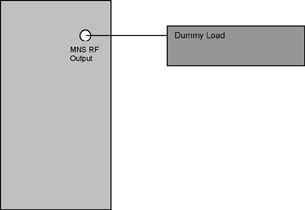
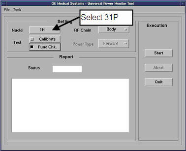

Operating Documentation
Direction 5440001-3, Rev# 6
Signa HDxt Service Methods
Module Version 2.0, Version Date 12/1/09
Operating Documentation |
| Required Persons | Preliminary Reqs | Procedure | Finalization |
|---|---|---|---|
| 1 | Not Applicable | 15 mins | 5 mins |
The UPM Functional checks consist of three automated tests:
Peak Power
Pulse Width
Duty Cycle
All 3 automated tests must pass to ensure the correct operation of the Universal Power monitor system.
| Item | Qty | Effectivity | Part# | Manufacturer | |
|---|---|---|---|---|---|
| Power Measurement Kit (Use Dummy load listed below if using G1 Kit) | 1 | - | 46-317724G1 or G2 | - | |
| 25KW, 30 dB Attenuator (Dummy Load) (Use only with G1 power measurement kit) | 1 | - | 46-317724P14 | - | |
| 50 Ohm 200 WATT, 30 dB Attenuator (Dummy Load) Use only if needed for the Power Measurement kit G1 | 1 | 1.5T | 46-317724P14 | - | |
| RF Test Cables Kit (Use ONLY with the G1 Power Measurement Kit) | 1 | 1.5T | 46-255816G1 | - | |
| Power Measurement Kit (Wattmeter Kit) | 1 | - | 2372868 | - | |
| ||||
| FATAL ELECTRIC SHOCK. | ||||
| HAZARDOUS VOLTAGES PRESENT THROUGHOUT THE RF CABINET WHEN ENERGIZED. | ||||
| DISABLE RF AMPLIFIER WHEN CONFIGURING THE CALIBRATION TOOLS. |
| Condition | Reference | Effectivity |
|---|---|---|
Properly calibrated RF Head, Body and MNS | - | - |
Inhibit TR faults. Disable the Driver Module TR fault detection in the RFS (RF in the System Cabinet), see Illustration 1. Move switch 2 to the TR Disable position.
Illustration 1: Driver Module Front Switches

Remove the MNS Heliax cable. Connect the RF dummy load to the MNS Amplifier.
| NOTE: | If the RF Max power out procedure was just completed,
the configuration is the same. Leave the MNS heliax cable disconnected.
Illustration 2: Plug the Dummy Load into MNS RF Output  |
Connect the 31P MNS TR coil to the system.
Start a [New Exam].
Enter the following parameters:
Patient ID: geservice
Weight: 111
Press the [Align] button on, (Land Mark).
Move the cradle to the Home position and then drive it into the bore.
Press [Align on].
Move the cradle to place the Laser alignment light near the Head Coil Area.
Press [Landmark].
Press [Advance to Scan].
From the Common Service Desktop:
For the Class M service tool, select [Calibration Wizard] from the calibration menu and select [Click here to start this tool] . Once the Calibration Wizard starts, select [UPM Calibration(Head and Body)] from the menu, review and okay the pre & post-dependencies, and finally select [Click here to start this tool]. Or start the tool under Class A/C mode shown next.
Illustration 3 shows an example of the UPM tool.
Illustration 3: UPM Main Window

Select the Nuclei [31P].
The RF Chain will then default to MNS.
Select: [Func Chk] Button
| NOTE: | Power Type selection will be grayed out. This is normal, and is not used. |
Select the [Start] button.
Illustration 4: MNS Setup Question

After that, the tool takes full control and runs the 3 functional tests for whatever setup is currently active. The result of each test is compared against a Specification File on the system. Status should indicate Pass/Fail.
During the tests, the user will be prompted 3 times as each test completes. Look in the error log to confirm that the tests completed successfully. The following illustrations show an example of pop ups and error logs that should be seen.
Illustration 5: Body Peak UPM Trip Question

Illustration 6: Error Log Example

Illustration 7: Pulse Width Trip Question

Illustration 8: Error Log Example Showing Pulse Width Trip

Illustration 9: Pulse Duty Cycle Trip Question

Illustration 10: Error Log Example Showing Pulse Duty Cycle Trip

Illustration 11: Pass Message

| NOTE: | A [TPS Reset] must be performed when testing is complete before scanning can resume. |
To proceed:
If any one of the tests fail, refer to Universal Power Monitor (UPM) Troubleshooting.
If all 3 tests pass, proceed to Finalization, Step 1.
Remove the cables and measurement equipment.
Reattach MNS Heliax cable.
Re-enable TR Driver fault detection.
Complete a TPS reset and do a test scan.
Any failure will require a re-calibration of the UPM system.